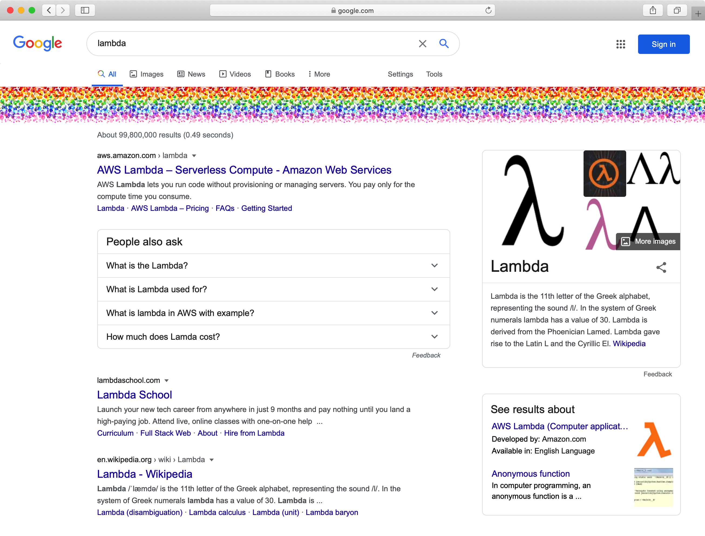

Created: 2020-09-13 Sun 15:27
“那你觉得彩虹的哪一个特色，让笛卡儿产生做数学分析的灵感？”
“其实彩虹是圆锥体的一段，当水滴被来自观察者后方的光线照射时，会呈现出弧状的光谱颜色。我想他的灵感来自于他发现可以藉由思考单一的水滴，以及它的几何位置来分析这个问题。”
“我会说他的灵感来自于他认为彩虹很美。”
《费曼的彩虹:物理大师的最后24堂课》

March 18, 2014
Java Programming Language
- Lambda Expressions, a new language feature, has been introduced in this release.
- Method references provide easy-to-read lambda expressions for methods that already have a name.
Collections
- Classes in the new java.util.stream package provide a Stream API to support functional-style operations on streams of elements.
for(T t : listOfT) {
// do something
}
void forEach(Consumer<? super T> action);
final List<String> friends =
Arrays.asList("Brian", "Nate", "Neal", "Raju", "Sara", "Scott");
for(String name : friends) {
System.out.println(name);
}
friends.forEach((final String name) -> System.out.println(name));
friends.forEach((name) -> System.out.println(name));
friends.forEach(name -> System.out.println(name));
friends.forEach(System.out::println);
List<R> listOfR = new ArrayList<>();
for(T t : listOfT) {
R r = map(t);
listOfR.put(r);
}
<R> Stream<R> map(Function<? super T, ? extends R> mapper);
final List<String> uppercaseNames = new ArrayList<String>();
for(String name : friends) {
uppercaseNames.add(name.toUpperCase());
}
final List<String> uppercaseNames = new ArrayList<String>();
friends.forEach(name -> uppercaseNames.add(name.toUpperCase()));
friends.stream().map(name -> name.toUpperCase());
friends.stream().map(String::toUpperCase);
List filteredListOfT = new LinkedList<>();
for(T t : listOfT) {
if (predicate(t)) {
filteredListOfT.add(t);
}
}
Stream<T> filter(Predicate<? super T> predicate);
final List<String> startsWithN = new ArrayList<String>();
for(String name : friends) {
if(name.startsWith("N")) {
startsWithN.add(name);
}
}
final List<String> startsWithN = friends.stream()
.filter(name -> name.startsWith("N")).collect(Collectors.toList());
T result = null;
for (int i = 0; i < listOfT.size(); i++) {
T t = listOfT.get(i);
if (i == 0) {
result = t;
continue;
}
result = accumulator(t, result);
}
Optional<T> reduce(BinaryOperator<T> accumulator);
T result = identity;
for (T t : listOfT) {
result = accumulator(t, result);
}
T reduce(T identity, BinaryOperator<T> accumulator);
U result = identity;
for (T t : listOfT) {
U partialResult = accumulator(t, result);
result = combiner(result, partialResult);
}
<U> U reduce(U identity,
BiFunction<U, ? super T, U> accumulator,
BinaryOperator<U> combiner);
Map<Long, User> userMap = Maps.newHashMap();
for (User user : users) {
userMap.put(user.getId(), user);
}
users.stream().reduce(
Collections.emptyMap(),
(Map<Long, User> acc, User user) -> {
acc.put(user.getId(), user);
return acc;
}, (acc1, acc2) -> {
acc1.putAll(acc2);
return acc1;
});
users.stream().reduce(
Collections.emptyMap(),
(Map<Long, User> acc, User user) -> {
HashMap<Long, User> newAcc = Maps.newHashMap(acc);
newAcc.put(user.getId(), user);
return newAcc;
}, (acc1, acc2) -> {
HashMap<Long, User> newAcc = Maps.newHashMap(acc1);
newAcc.putAll(acc2);
return newAcc;
});
users.stream().collect(Collectors.toMap(User::getId, Function.identity()));